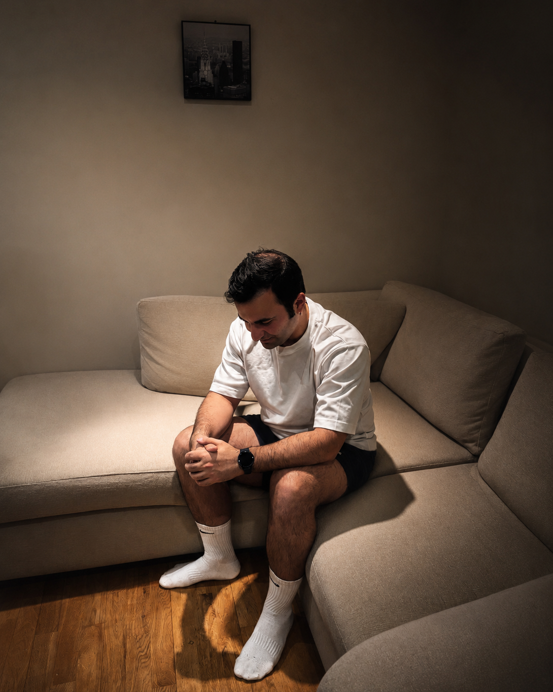
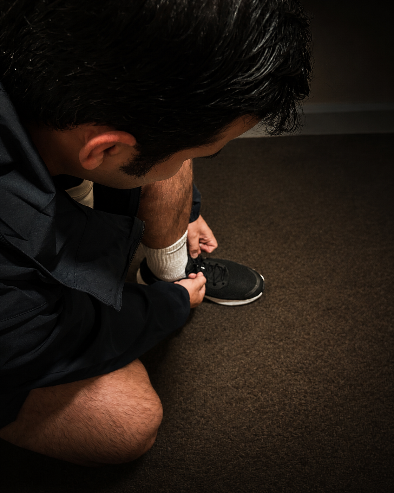
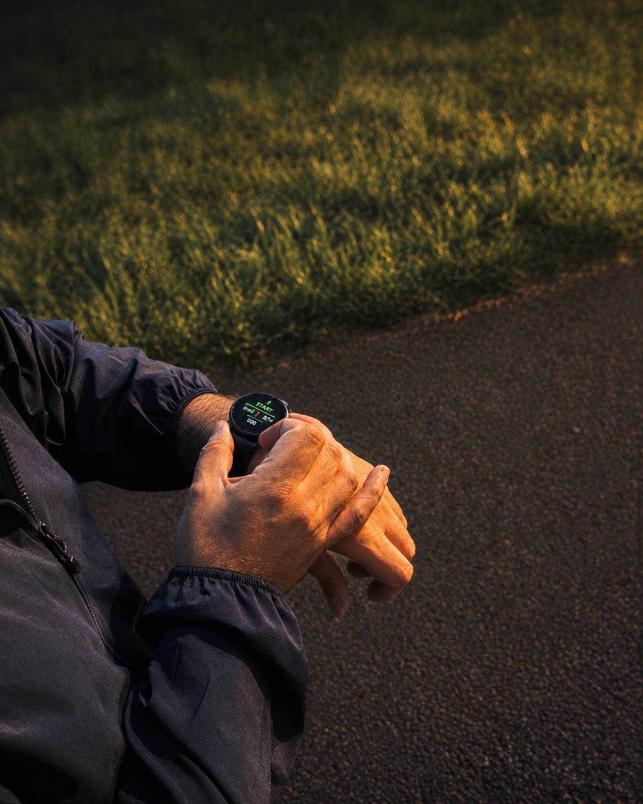
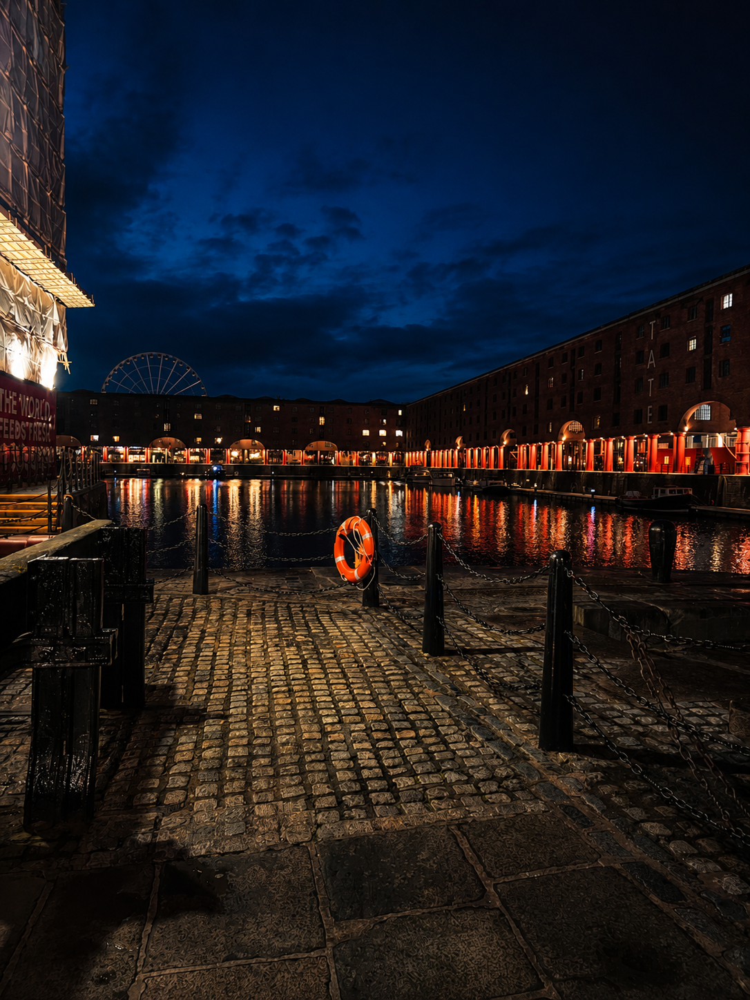
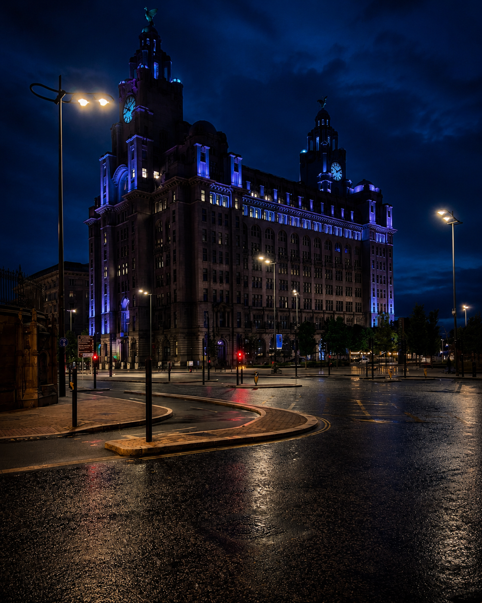
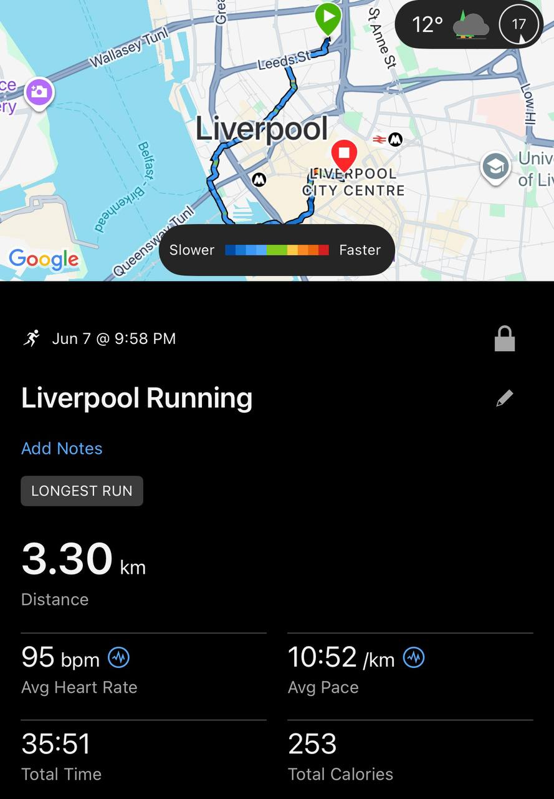

۹ اسلاید (۱۰۸۰×۱۳۵۰)، همرنگ با Carousel-Kit. عکسها رو با همین اسمها بذار توی پوشهی recovery-run/ کنارِ همین فایل:
1-couch.jpg · 2-shoes.jpg · 3-watch.jpg · 4-dock.jpg · 5-liverbuilding.jpg · 6-log.png.
بعد روی هر اسلاید دکمهی ⬇ PNG رو بزن (برای اکسپورت، فایل رو از طریقِ یه سرورِ محلی باز کن، وگرنه ازش اسکرینشات بگیر).
1-couch.jpg man on couch

AMIRARDEKANI.COM
۰۱ / ۰۹
یه اعتراف
من مربیام. امشب نزدیک بود تمرین نکنم.
چی از رو مبل بلندم کرد — و چرا جلوی خودمو گرفتم؟
AMIRARDEKANI.COM
۰۲ / ۰۹
سؤال این نبود که تمرین کنم یا نه. سؤال این بود: با چه شدتی؟
— روزِ کاریِ طولانی. انگیزه صفر.
AMIRARDEKANI.COM
۰۳ / ۰۹
انتخاب کردم: سبک. عمداً.
— ریکاوری، نبودِ تمرین نیست؛ خودش یه تصمیمِ تمرینیه.
2-shoes.jpg tying laces

AMIRARDEKANI.COM
۰۴ / ۰۹
مشکلِ اول: مبل
فقط کفشتو بپوش. بقیهش راحته.
سختترین حرکت، همیشه اولیه.
3-watch.jpg checking watch

AMIRARDEKANI.COM
۰۵ / ۰۹
قانونی که اگو نتونه باهاش چونه بزنه
ضربانِ قلب، زیرِ ۱۴۰.
روی مچ، جلوی چشم. همین.
4-dock.jpg Albert Dock night

AMIRARDEKANI.COM
۰۶ / ۰۹
جلسهی ریکاوری
حسش زیادی راحت بود. دقیقاً باید همین باشه.
دو، قدم، دو — تا عدد میرفت بالا، آروم میکردم.
5-liverbuilding.jpg Liver Building night

AMIRARDEKANI.COM
۰۷ / ۰۹
چرا نه بیشتر؟
میتونستم بیشتر فشار بیارم. ولی فردا، باشگاهه.
تمرین یه جلسه نیست، یه سیستمه. کارِ امشب، محافظت از فردا بود.
AMIRARDEKANI.COM
۰۸ / ۰۹
ثبت شد
هر چی رو اندازه بگیری، میتونی مدیریتش کنی.
6-log.png run screenshot

۳٫۳۰
کیلومتر
۹۵
میانگینِ ضربان
۱۰:۵۲
تمپو · دقیقه/کیلومتر
۹۵ ضربان برای یه «دویدن» خیلی پایینه. هدف هم دقیقاً همین بود.
AMIRARDEKANI.COM
۰۹ / ۰۹
جمعبندی
نظم، همیشه سخت رفتن نیست. گاهی، نظمه که سبک بری.
تو آخرینبار کِی عمداً سبک رفتی؟ بنویس 👇
ذخیرهش کن
فالو کن
@amirardekanian · با نیّت تمرین کن، با نیّت ریکاوری کن.